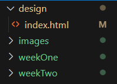

Welcome to Week 2 of Interactive Media!
My Folder Structure
When it comes to structuring my project folder, I went for a different approach. Although I recognise that there might be a correct or better way to handle this, I chose to use a structure where I can organise by week rather than having a scripts folder. It is for this reason that I have chosen to use a folder for images, a folder for styles, and a folder for each week. (Right now I have a folder for Week 1 and a folder for Week 2).
I definitely see the use of GitHub a lot more than I did before.
Readings
This weeks reading looks at two perspectives for the future of hypertext. One offers a dystopian outlook while the other is more optimistic. This is interesting considering that the internet today could be viewed in both ways. With the growth of AI, we feel organic human communication and interaction feathering away, but we are also given the opportunity to connect with people we would have never connected with before. The telegram for example, would not have connected 2 people from opposite sides of the globe, through a cat picture. It’s so important to remember that we have the potential to use technology and digital media to challenge power structures in society.
I think it’s important to question how the future of technology will actually change. If we look back to the 20th century, people predicted flying care, but now, in the 21st century, I can’t combine my Spotify playlists with my Apple Music playlists. I believe this speaks to how overambitious and unrealistic humans are. We are constantly wanting change and to evolve, yet we still remain under the hand of our top 1%. While billionaires profit off of our losses, and capitalism grows, we continue to ask for more, without asking to fix what we have first.
My Current Wireframe
Firstly, it's important to mention that my wireframe is not permanent YET. Now that we have that out of the way, let's get into it.
I wanted my site to be simple and easy to navigate. This wireframe explores the main structures of the site... Where the title goes, how blog is layed out, etc. I don't consider this my final wireframe as I do want to later add more and make it a lot more dynamic. I haven't tested out the responsiveness of this, so there's a big chance it'll change later on so that the display: flex; doesn't have too much of a negative impact.

Later. Navigator: How Netscape Won and then Lost the World Wide Web by Matt Blitz and Flash and it History on the Web by Jay
I originally had no idea that the browser war was even a thing until I did this reading. Obviously, I knew that the tech industry is highly competitive and that there are constantly sites and apps competing for users, but I didn't know that Microsoft had essentially killed a start up. It was so frustrating to read that these university developers had created something and due to IP rights had to start from scratch, just to be booted by a huge company like Microsoft. I think that if they had taken the deal with Nintendo they might've lasted longer or at least had a fighting chance, but unfortunately it would be at the expense of their ownership. This type of competition is seen all over the internet as it becomes easier for start ups to create and build. The article actually reminded me of something I experienced as a user throughout the years. As Twitter began ruining the user experience, users were moving to apps like BlueSky for example, but that never lasted long, because you had already created an environment for yourself, and its easier to deal with bad user experience than to rebuild your following and algorithms on a new app. This concept is not exclusive to Twitter. As we saw the ban of TikTok in America, many American content creators moved to Xiaohongshu (The Little Red Book), a Chinese social media app, which offered a combined experience of Pinterest, Instagram, Twitter and TikTok. With the move of most creators, many non-Americans found themselves moving over there as well, myself included. This move didn't even last a few days, since TikTok was up and running again quite quickly. The difference between BlueSky and Xiaohongshu though, is that BlueSky was like a brand new platform, whereas Xiaohongshu already had their follower base in China. BlueSky suffered more than Xiaohongshu because of this. With the drop of internet tools, I of course have to mention Flash. FlashPlayer was a big part of my childhood because it hosted games like Papa's Pizzeria, Friv and Plants vs Zombies. These games made up my childhood, and I remember the moment I opened my browser to play Papa's Pizzeria, only to be greeted with a pop up informing me that Flash was going to be discontinued. For a while after that, it was impossible for me to play these games, because they all relied on FlashPlayer to run. Luckily, a solution was found and the games were back to being up and running. I think it really says a lot how these different platforms provided what felt like "miniscule" impacts to our daily use, but when you really think about it, you realise how much can actually be lost as both a developer and a user. Going into this industry, I think it's important to be aware of the risks you take with every development you make.
Goals for this Course
I really enjoyed my web development vac work, and although I know I wasn't working on anything truly important in the grand scheme of things, I hope to do so in the future. Even if it just means making BuzzFeed styled personality quizzes. I also hope to expand my knowledge on digital ethics and how to navigate the world with AI */}